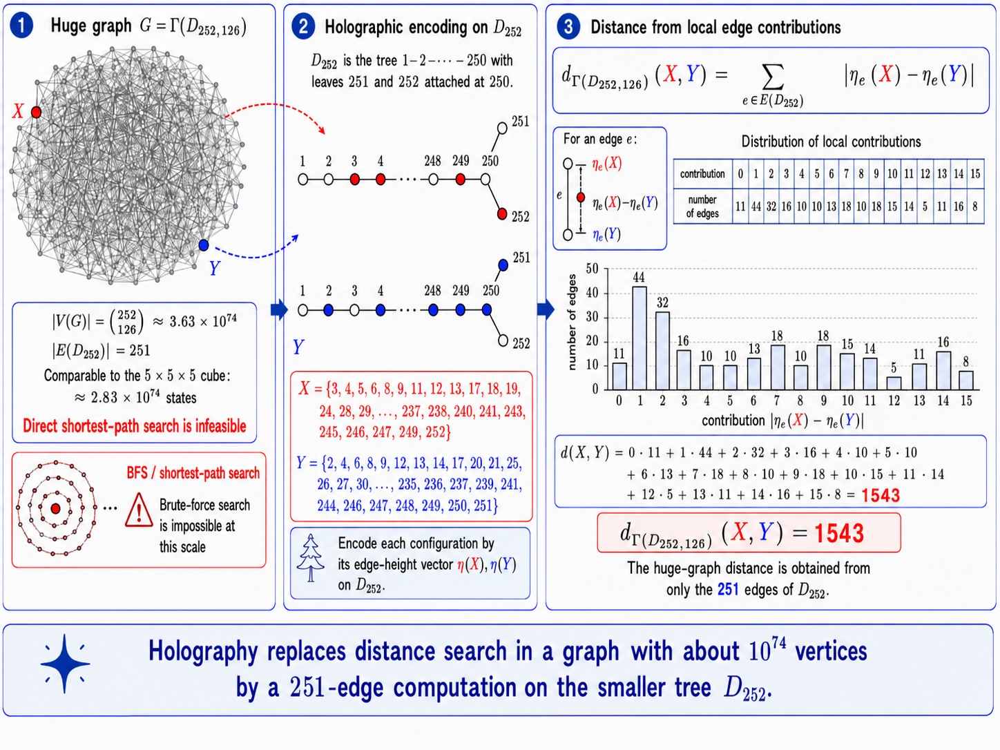
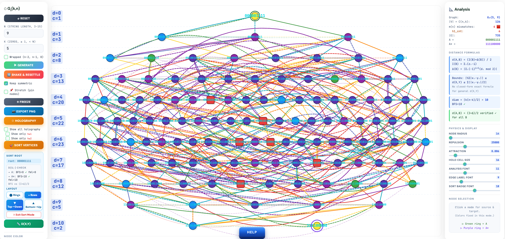
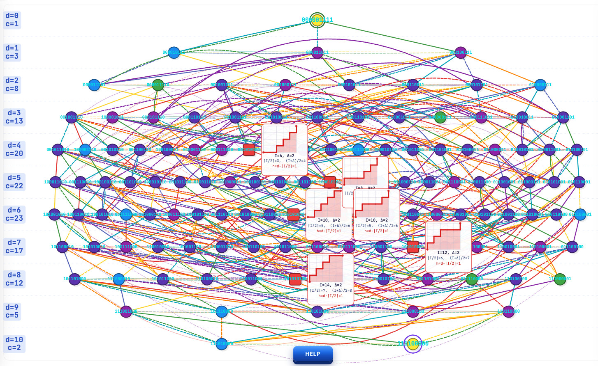
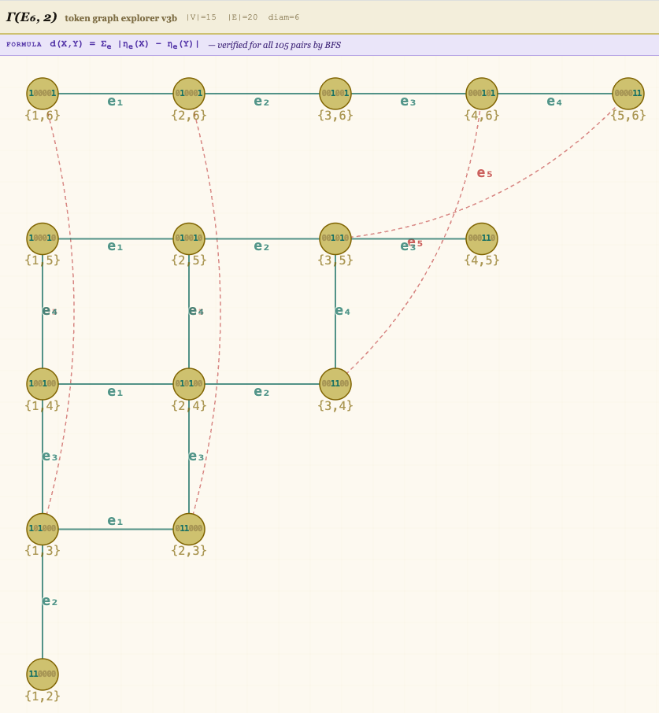
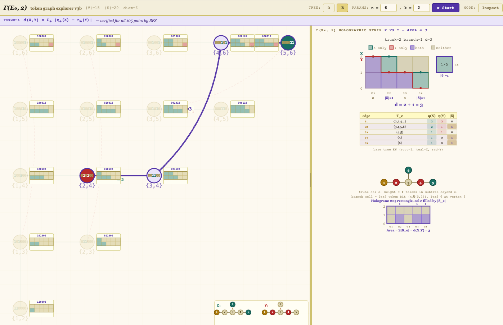
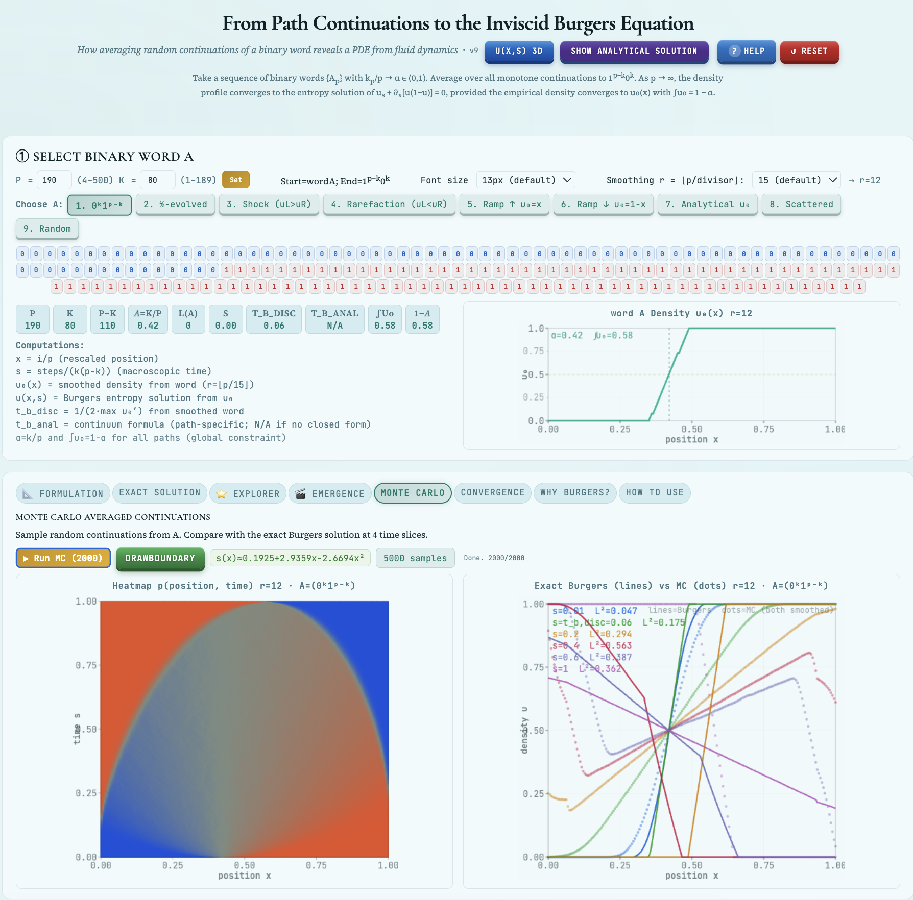

Why Holography
The motivating case: a graph too large for brute-force search, and how the holographic encoding sidesteps that entirely.

- Formulate the problem as a deterministic shortest-path Markov decision process.
- Compare algorithms such as DQN, Double DQN, dueling DQN, PPO, actor–critic methods, Monte Carlo tree search, AlphaZero-style policy/value learning, and goal-conditioned RL.
- Address the sparse-reward problem and propose reward shaping that does not change the optimal policy.
- Explain how the learned value function can be converted into an estimate of d_G(X,A). Distinguish between methods that provide exact distances and methods that provide only estimates.
- Explain conditions under which a learned heuristic is admissible or consistent.
Consecutive-Cycle Systems
Schreier graph visualizers and holography for permutation systems generated by consecutive 3- and 4-cycle moves, including the graph ↔ rectangle correspondence and a 3D Schreier graph rendering.
Figures — G₃(5, 9)
Two views of the Schreier graph G₃(5, 9) — 9-bit strings with 5 zeros, generated by consecutive 3-cycle moves, |V| = C(9,5) = 126, showing the full graph with its distance formula d(A,B) = (I(B)+Δ(B))/2 verified against BFS.


More on Holography & Graph Visualizations
Visualizations accompanying the CayleyPy-4 "AI-Holography" paper — path analysis, the Box-Ball System, and token-graph holography.
Γ(Dₙ/Eₙ, k) — Token Graph Explorer v3
What is this? Choose a tree type (D or E), enter n and k, press Start. The app builds Γ(T,k): all C(n,k) ways to place k tokens on the n-node Dynkin tree T, connected by single token moves along tree edges.


Path dynamics and integrable systems
Two interactive companions connect the discrete path picture with nonlinear continuum dynamics and with the soliton-like evolution of the Box-Ball System.

Empirical Validation
Notebooks that validate the graph-distance theory empirically via brute-force BFS.
Embeddings
Two companion pages introducing word2vec: a walkthrough with lecture material, and a hands-on Skip-gram sandbox.
Related
Lighter and adjacent material: the fluid-dynamics side of the path-analysis work, and a classic puzzle used as an aid for related graph research.